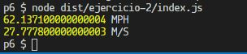
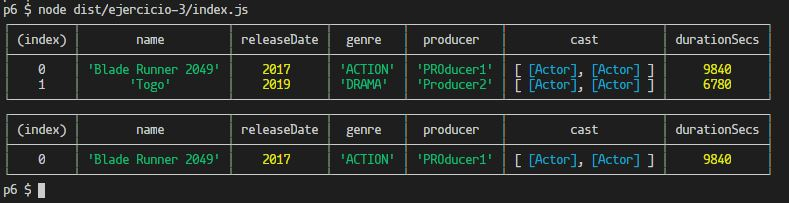

Ver en Github
Introducción
Objetivos
1. El combate definitivo
Partiendo del desarrollo de este ejercicio en el que hemos desarrollado una Pokedex y una clase que permite simular combates entre Pokémons, crearemos ahora un conjunto de clases que permitan simular combates de personajes de distintos universos (Marvel, Pokemon, etc).
Luchadores
En primer lugar crearemos la clase abstracta Fighter. Esta clase almacenará datos comunes a todos los luchadores tales como: nombre, altura, peso, valores de ataque, defesa y velocidad y la cantidad de vida (hitPoints). Además, definirá un método abstracto llamado talk, que retornará una string; este método deberá ser implementado por todos los descendientes instanciables de esta clase y servirá para que cada personaje diga su catching phrase.
Esta clase también definirá un método abstracto llamado getEffectiveness, que recibirá como parámetro otro Fighter y retornará la efectividad que se aplicaría en caso de un ataque del objeto invocante al objeto que se pasa por parámetro. De esta forma le quitamos la responsabilidad de calcular dicha efectividad a la clase Combat (que era la responsable de calcularla en el ejercicio de la práctica anterior) y la delegamos a las clases de niveles más bajos en la jerarquía. con este diseño podríamos, por ejemplo, implementar determinadas reglas para todos los luchadores de un universo en concreto o hacer que cada luchador sea responsable de recordar y aplicar sus propias reglas.
Una vez tengamos definida nuestra clase Figther, podremos definir distintos universos que herederán de ella. Estos universos serán también clases abstractas y se encargarán de definir atributos y métodos que deben ser implementados por los personajes de cada uno de los universos.
En este caso, definiremos los universos Marvel y Pokemon.
Marvel
Esta clase será la clase padre de todos aquellos personajes pertenecientes al universo Marvel, y por lo tanto definirá el atributo planet: MarvelPlanet, que identificará el planeta del que procede un determinado personaje.
Nota: He definido MarvelPlanet como una unión de tipos en la que se encuentran la tierra, Asgard, Titán y Zen Whoberi.
Pokemon
De forma similar, esta clase definirá un atributo type: PokemonType igual al utilizado en el ejercicio 1 de la práctica anterior.
Y por último, procederemos a crear las clases detalladas de cada uno de los personajes que integrarán nuestro macro universo. Esto lo haremos creando clases hijas de cada uno de los universos e implementando el método talk y los atributos planet y pokemonType según corresponda. Asimismo, implementaremos el método getEffectiveness en cada uno, para que sea responsabilidad de cada personaje calcular su efectividad.
De esta forma, obtendríamos un esquema como el siguiente:

Como se mencionó anteriormente, en esta implementación cada personaje es responsable de calcular su efectividad a modo demostrativo. Sin embargo, podríamos mover dicho método a sus clases padres (Marvel y Pokémon) si así lo quisiéramos y sobreescribirlo solo en los casos necesarios.
Combate
Redefiniremos la clase Combat como una clase genérica que recibirá argumentos de tipo genérico indicando la naturaleza de los luchadores:
export class Combat<A extends Fighter, B extends Fighter> {
constructor(private fighterA: A, private fighterB: B) {
}
. . .
Así, podremos obtener instancias que solo admitan determinadas configuraciones de luchadores: dos de universos diferentes, dos del mismo universo o dos de cualquier universo, etc...
La clase Combat almacenará los contrincantes e implementará los siguientes métodos:
calcDamage: Encargado de aplicar una fórmula matemática para calcular el daño ocasionado dependiendo de los valores de ataque, defensa y efectividad.damageCasused: Encargado de pasar los valores de ataque y defensa de los contrincantes a la función matemática que calcula el daño.start: Empieza una batalla entre los contrincantes turnando los ataques hasta que se agote la vida de uno de ellos. Además, imprime el estado actual tras cada ataque.printStatus: Imprime por consola el estado actual de los contrincantes (hitPoints) junto a unacatching phrasede cada uno de ellos.

A continuación, una demostración de una batalla entre un Pikachu y un Thor:
const combat = new Combat(new Thor(), new Pikachu());
combat.start();
Lógica de combate
Como se mencionó anteriormente, en esta implementación cada personaje es responsable de calcular su efectividad dependiendo del personaje al que va a atacar. Las reglas definidas son las siguientes:
- Si el atacante es Asgardiano, siempre será muy efectivo
- En otro caso: Pokémon > Marvel
| * Si ambos contrincantes son Pokémons |
|---|
| Fuego > Hierba |
| Fuego < agua |
| Fuego = Eléctrico |
| Agua < Hierba |
| Hierba = Eléctrico |
| * Si ambos contrincantes son de Marvel |
|---|
| Asgard > Todos |
| Earth > Titan |
| Earth = Zen whoberi |
- En cualquier otro caso, la efectividad es neutral
Ejemplo de la implementación de la lógica de combate para la clase IronMan:
getEffectiveness(defender: Fighter): effectVal {
if (defender instanceof Pokemon) return effectVal.notQuiteEffective;
if (defender instanceof Marvel) {
switch (defender.getPlanet()) {
case 'ASGARD': return effectVal.notQuiteEffective;
case 'EARTH': return effectVal.notQuiteEffective;
case 'TITAN': return effectVal.superEffective;
case 'ZenWhoberi': return effectVal.neutral;
}
}
return effectVal.neutral;
}
Pokedex genérica
Por último, implementremos una clase MultiversePokedex que sea capaz de almacenar personajes de diferentes universos.
Para ello, primero modifcaremos la clase Pokedex creada en la práctica anterior y la haremos genérica, de modo que podamos especificar el tipo de luchador que almacenará. Dicho tipo extendrá a la clase Fighter, para así restringirlo a personajes pertenecientes a los universos conocidos.
A continuación, haremos que MultiversePokedex extienda a Pokedex y que pase Fighter como su parámetro de tipo genérico para que sea capaz de almacenar personajes de todos los universos:

2. Conversor de unidades
A continuación, desarrollaremos un conjunto de clases que nos permitan realizar conversiones de unidades o sistemas de medición para distintas magnitudes físicas. En concreto, crearemos un sistema inicialmente integrado por dos magnitutdes físicas: Masa y Velocidad, y que será fácilmente extendible mediante la adición de nuevas clases.
El diseño para este ejercicio consiste en el desarrollo de una interfaz genérica llamada isConvertible que define la siguiente forma:
export interface IsConvertible<DataType, UnitType> {
data: DataType;
currentUnit: UnitType;
convertTo(unit: UnitType): DataType;
}
Donde UnitType especifica el conjunto de unidades de medida con el que se va a trabajar; por ejemplo: metros, centímetros y kilómetros; y DataType especifica el tipo del dato a convertir, por ejemplo: number, string, etc...
Esta interfaz define un atributo llamado data que representará el dato a almacenar y sobre el que se ejecutarán las transformaciones. Es importante recalcar que al estar definido en la interfaz, dicho dato será necesariamente público en aquellas clases que implementen la interfaz. En caso de que sea necesario definirlo como un atributo privado podríamos evitar definirlo en la interfaz y limitar el contenido de la misma a los métodos que gestionan el atributo.
Asimismo, define un atributo llamado currentUnit que almacena la unidad de medida bajo la cual está representado el dato actualmente.
Por último, el método convertTo recibe como parámetro la unidad de medida a la cual se quiere transformar el dato almacenado y retorna dicho valor ya transformado.
Veamos el ejemplo de implementación para la Velocidad:
La clase
Velocityimplementa la interfazisConvertibepasando como argumentos de tipo genérico el tiponumbery la unión de tiposVelocityUnit, que incluye metros por segundo, kilómetros por hora y millas por hora. El métodoconvertTorecibe como parámetro un valor de tipoVelocityUnity, mediante un switch-case, invoca uno de los métodos que convierte el dato almacenado a la unidad deseada:export type VelocityUnit = 'KM/H' | 'MPH' | 'M/S'; export class Velocity implements IsConvertible<number, VelocityUnit> { constructor(public readonly data: number, readonly currentUnit: VelocityUnit) {} convertTo(unit: VelocityUnit): number { switch (unit) { case 'KM/H': return this.convertToKMH(); case 'MPH': return this.convertToMPH(); case 'M/S': return this.convertToMS(); } } . . . private convertToKMH(): number { switch (this.currentUnit) { case 'KM/H': return this.data; case 'M/S': return this.data * 3.6; case 'MPH': return this.data * 1.60934; } } . . .
Además, define una serie de métodos que facilitan la conversión entre unidades de medida, por ejemplo:
. . .
toKMH(): number {
return this.convertTo('KM/H');
}
. . .
De modo que su uso sea de la forma:
const vel = new Velocity(100, 'KM/H');
console.log(vel.toMPH(), 'MPH');
console.log(vel.toMS(), 'M/S');

3. DSIflix
Para este ejercicio diseñaremos el modelo de datos de una plataforma de vídeo en streaming.
- Definiremos una interfaz genérica llamada
Streamable<StreamType>que definirá algunos de los métodos que implementa una colección de emisiones. Esta interfaz recibirá como argumento de genérico el tipo de dato de las emisiones de la colección (StreamType). Los métodos que definirá son:getCollection() StreamType[]: Devuelve la colección de emisiones.setCollection(newCollection StreamType[]): Actualiza la colección de emisiones.
Además, para cumplir con el Interface Segregation Principle, añadiremos otras dos interfaces que definen más métodos a implementar por colecciones de emisiones:
- SearchableByName
: definirá el método searchByName, que recibirá un nombre y devolverá un vector de elementosSearchResultcon los elementos cuyo nombre coincida con el término de búsqueda. - SearchableByYear
: de forma similar a la interfaz anterior, definirá el método searchByYear, que recibirá como argumento el año como unnumber, y retornará un vector con los resultados.
Posteriormente desarrollaremos la clase abstracta genércia BasicStreamableCollection, que implementará las interfaces anteriormente mencionadas y recibirá como argumento de tipo genérico el tipo de elementos de los que estará compuesta la colección a almacenar. También definirá la colección como tal, que consistirá en un vector del tipo genérico pasado como argumento. Además, implementará el setter y getter para dicho atributo y definirá como asbtractos los métodos de las interfaces SearchableByName y SearchableByYear.
En este punto, crearemos una jerarquía de clases aparte para representar producciones audiovisuales tales que podamos utilizar dichas clases para definir clases detalladas hijas de la clase BasicStreamabaleCollection.
Esta jerarquía seguirá el siguiente esquema:

De esta forma podemos implementar las clases SeriesCollection y MovieCollection:
SeriesCollectionextiende aBasicStreamabaleCollectionpasándole como argumento de tipo genérico la claseSeries.MovieCollectionextiende aBasicStreamabaleCollectionpasándole como argumento de tipo genérico la claseMovie.
Ambas clases implementan los métodos definidos como abstractos en su superclase.
Es importante recalcar que debido a que el parámetro genérico de tipo no está restringido en la superclase, no se pueden implementar los métodos de las interfaces Searchable, ya que los tipos podrían no contener los atributos necesarios. En esta implementación, se ha optado por no restringir el parámetro de tipo genérico para evidenciar dicho problema, que podría ser fácilmente resuelto haciendo que el parámetro de tipo genérico extienda a la clase AudioVisualProduction.
Ejemplo de uso:
const movies = [
new Movie('Blade Runner 2049', 2017, 'ACTION', 'PROducer1',
[
new Actor('Dave', 'Bautista', 1960),
new Actor('Ryan', 'Gosling', 1980),
],
164 * 60),
new Movie('Togo', 2019, 'DRAMA', 'Producer2',
[
new Actor('Christopher', 'Heyerdahl', 1970),
new Actor('Willem', 'Dafoe', 1950),
],
113 * 60),
];
const movieCollection = new MovieCollection(movies);
console.table(movieCollection.getCollection());
console.table(movieCollection.searchByYear(2017));

Conclusionesx
Esta práctica se ha realizado intentando aplicar los principios SOLID, destacando principalmente el Interface Segregation Principle en el caso del ejercicio 2 (definir varias interfaces cortas en vez de una extensa), el Open-Closed (clases abiertas a extensiones y cerradas a modificciones) y el Single responsibility (clases con una sola responsabildad) principles en el ejercicio 1; y el Dependency Inversion principle (hacer que los detalles dependan de las abstracciones) en el ejericio 3. Ejemplo de este último es el hacer que la clase Movie dependa de la clase abstracta Person en vez de hacer que dependa directamente de la clase detallada Actor